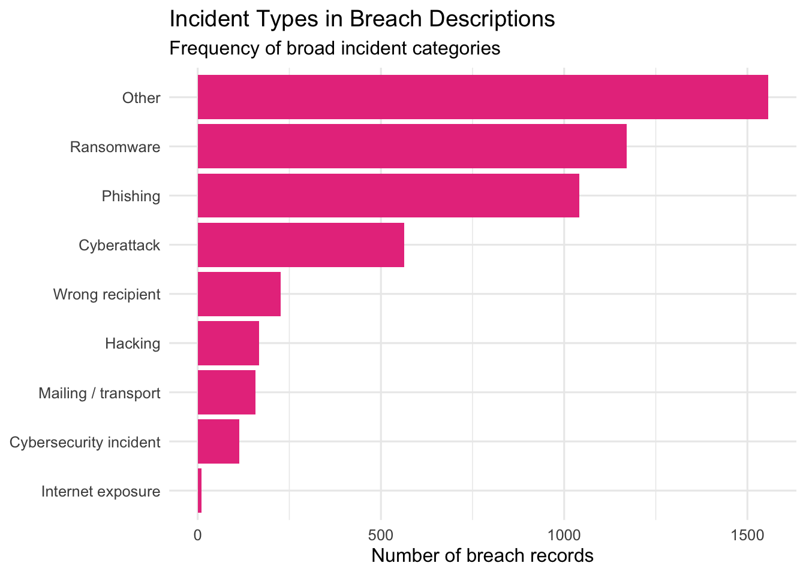
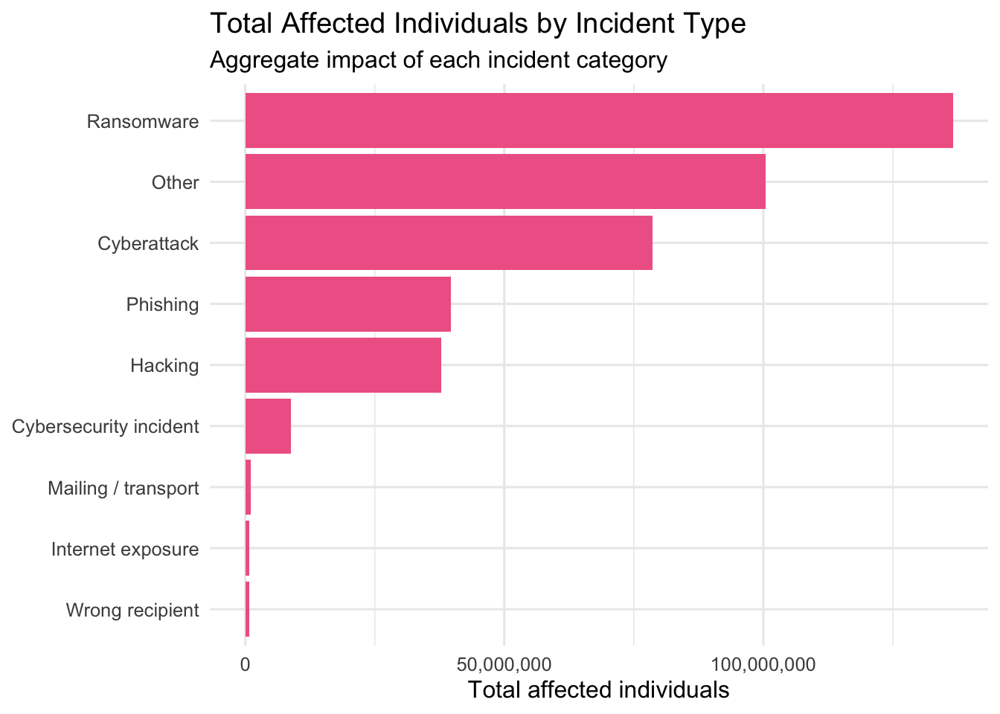
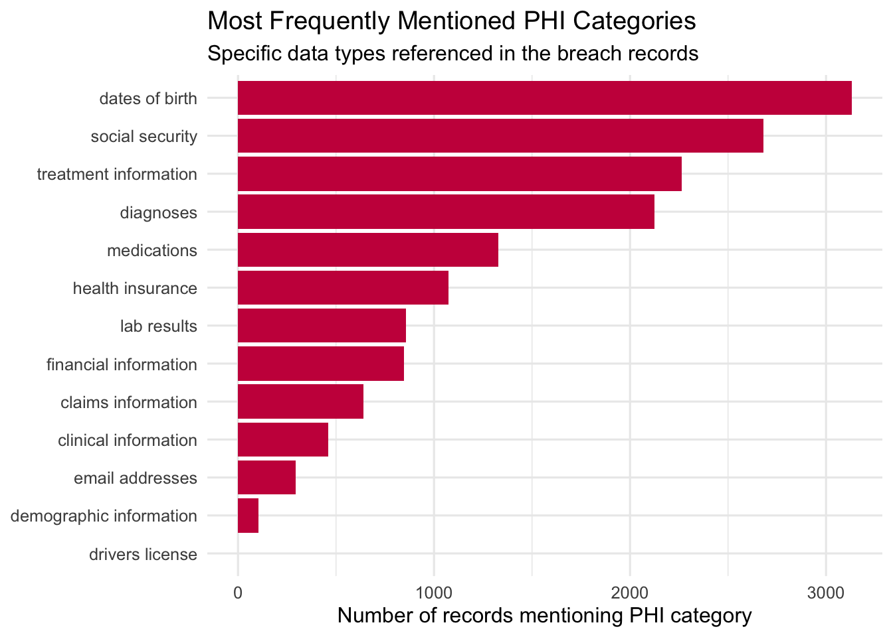
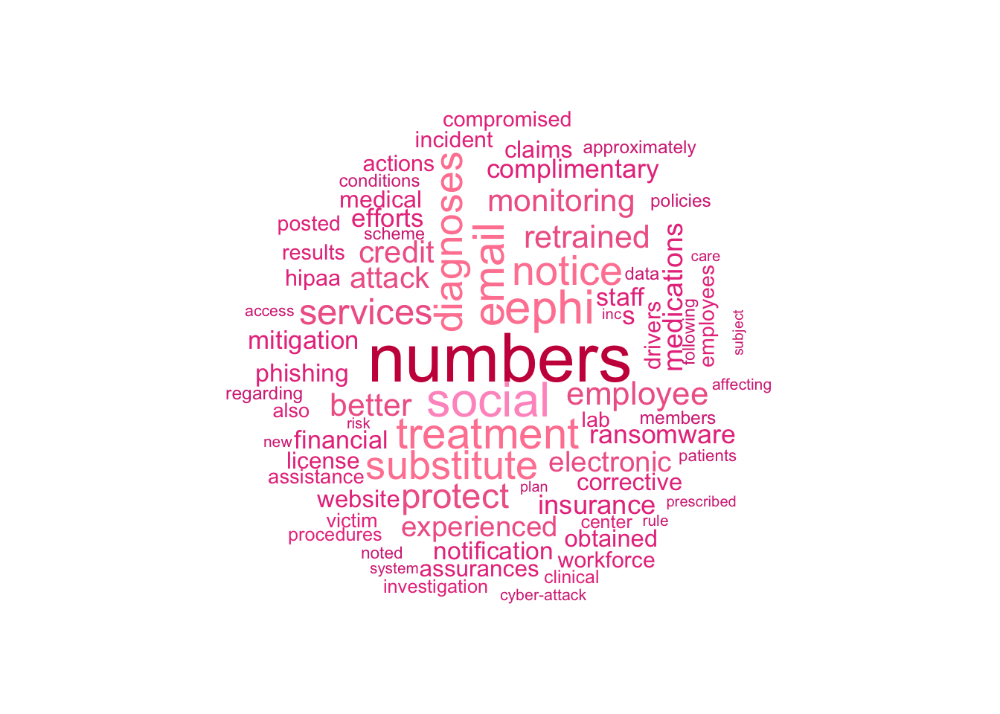

library(tidyverse)
library(readr)
library(quanteda)
library(quanteda.textstats)
library(quanteda.textplots)
library(stringr)
library(scales)
library(RColorBrewer)
library(topicmodels)
library(plotly)
library(knitr)Cyber Insurance Research
1 Overview
This project for my senior capstone analyzes a CSV file of breach descriptions as a text corpus. The goal is to identify the most common claim language, incident types, PHI categories, mitigation actions, and broader topic patterns mentioned across the records.
The workflow follows a text-mining structure that moves from spreadsheet text to a corpus, then to tokens, and then to a document-feature matrix for visual analysis. This makes it possible to compare repeated language patterns across breach descriptions while preserving the full dataset.
2 Data and Workflow
The analysis proceeds in six steps:
- Read the CSV into R.
- Treat each non-empty CSV row as one breach record.
- Create simple metadata from the text, such as incident type and number of affected individuals.
- Build a quanteda corpus and document-feature matrix.
- Generate visualizations for word frequency, incident patterns, PHI categories, and common phrases.
- Save a clean extracted dataset for future use.
3 Software and References
This project used the following tools and references:
4 Load Packages
This section loads the R packages used for CSV import, cleaning, corpus construction, plotting, and topic modeling.
5 Read the CSV
This section reads the CSV into R. Because the CSV already stores the breach descriptions in tabular form, there is no need to reconstruct records from PDF text.
csv_file <- "WebDescription (1)(Sheet1).csv"
raw_claims <- read_csv(csv_file, show_col_types = FALSE)
cat("Rows loaded from CSV:", nrow(raw_claims), "\n")Rows loaded from CSV: 5008 cat("Columns found:", paste(names(raw_claims), collapse = ", "), "\n")Columns found: Web Description 6 Create the Record-Level Dataset
This step identifies the breach-description column and treats each non-empty CSV row as one claim record. That means the report uses the CSV directly rather than relying on PDF splitting.
text_col <- names(raw_claims)[
stringr::str_detect(
names(raw_claims),
stringr::regex("^web\\s*description$", ignore_case = TRUE)
)
][1]
if (is.na(text_col) && ncol(raw_claims) == 1) {
text_col <- names(raw_claims)[1]
}
if (is.na(text_col)) {
stop(
paste0(
"Could not find a 'Web Description' column. Columns found: ",
paste(names(raw_claims), collapse = ", ")
)
)
}
claims <- raw_claims %>%
mutate(text = .data[[text_col]]) %>%
mutate(text = stringr::str_squish(as.character(text))) %>%
filter(!is.na(text), text != "") %>%
mutate(doc_id = paste0("claim_", row_number())) %>%
select(doc_id, text)
cat("Non-empty breach records used in analysis:", nrow(claims), "\n")Non-empty breach records used in analysis: 5008 7 Create Simple Metadata
This section creates basic variables directly from the text. These variables help summarize the kinds of incidents and the level of impact described in the records.
claims <- claims %>%
mutate(
incident_type = case_when(
str_detect(str_to_lower(text), "ransomware") ~ "Ransomware",
str_detect(str_to_lower(text), "phishing") ~ "Phishing",
str_detect(str_to_lower(text), "wrong recipient|wrong recipients") ~ "Wrong recipient",
str_detect(str_to_lower(text), "hacking incident|hacking attack") ~ "Hacking",
str_detect(str_to_lower(text), "cybersecurity incident") ~ "Cybersecurity incident",
str_detect(str_to_lower(text), "cyber-attack|cyberattack") ~ "Cyberattack",
str_detect(str_to_lower(text), "viewable over the internet|publicly available via the internet") ~ "Internet exposure",
str_detect(str_to_lower(text), "lost during transport|mailed|postcard") ~ "Mailing / transport",
TRUE ~ "Other"
),
affected_raw = str_extract(text, "\\d{1,3}(?:,\\d{3})*\\s+individuals"),
affected_individuals = str_extract(affected_raw, "\\d{1,3}(?:,\\d{3})*"),
affected_individuals = as.numeric(str_replace_all(affected_individuals, ",", "")),
credit_monitoring = if_else(
str_detect(
str_to_lower(text),
"credit monitoring|free credit monitoring|complimentary credit monitoring"
),
1, 0
),
retraining = if_else(
str_detect(str_to_lower(text), "retrained|retraining|training"),
1, 0
),
technical_safeguards = if_else(
str_detect(
str_to_lower(text),
"technical safeguards|security safeguards|access controls|encryption|multifactor authentication|multi-factor authentication"
),
1, 0
),
media_notice = if_else(
str_detect(str_to_lower(text), "the media|media\\b"),
1, 0
)
)
table(claims$incident_type)
Cyberattack Cybersecurity incident Hacking
564 114 167
Internet exposure Mailing / transport Other
11 158 1556
Phishing Ransomware Wrong recipient
1041 1171 226 8 Build the Corpus and Document-Feature Matrix
This is the main text-mining setup step. The CSV text is converted into a quanteda corpus, tokenized, cleaned, and transformed into a document-feature matrix.
corp_claims <- corpus(claims, text_field = "text")
toks <- tokens(
corp_claims,
remove_punct = TRUE,
remove_numbers = TRUE,
remove_symbols = TRUE,
remove_url = TRUE
) %>%
tokens_tolower() %>%
tokens_remove(stopwords("english")) %>%
tokens_remove(c(
"ce", "ba", "phi", "hhs", "ocr", "reported", "affected", "individuals",
"information", "protected", "health", "involved", "included", "entity",
"covered", "business", "associate", "breach", "response", "provided",
"implemented", "additional", "notified", "technical", "administrative",
"security", "safeguards", "media", "names", "addresses", "dates", "birth"
))
dfmat <- dfm(toks)
dfmat <- dfm_trim(dfmat, min_termfreq = 3, min_docfreq = 2)
cat("DFM:", ndoc(dfmat), "documents,", nfeat(dfmat), "features\n")DFM: 5008 documents, 2855 features9 Graph 1: Most Common Words
This graph shows the terms that appear most often across all breach descriptions.
It provides a broad overview of the dominant language in the dataset.
topfeat <- topfeatures(dfmat, 20)
top_words <- tibble(
term = names(topfeat),
count = as.numeric(topfeat)
)
ggplot(top_words, aes(x = reorder(term, count), y = count)) +
geom_col(fill = "#d63384") +
coord_flip() +
labs(
title = "Most Common Words in Breach Descriptions",
subtitle = "Overall word frequency across all CSV records",
x = NULL,
y = "Word frequency across records"
) +
theme_minimal(base_size = 12)
10 Graph 2: Incident Type Distribution
This graph shows how often each type of breach incident appears in the records.
It helps identify which incident types are most common in the corpus.
claims %>%
count(incident_type, sort = TRUE) %>%
ggplot(aes(x = reorder(incident_type, n), y = n)) +
geom_col(fill = "#e83e8c") +
coord_flip() +
labs(
title = "Incident Types in Breach Descriptions",
subtitle = "Frequency of broad incident categories",
x = NULL,
y = "Number of breach records"
) +
theme_minimal(base_size = 12)
11 Graph 3: Total Affected Individuals by Incident Type
This graph moves from record counts to impact. It shows which incident types account for the largest total number of affected individuals.
claims %>%
group_by(incident_type) %>%
summarise(total_affected = sum(affected_individuals, na.rm = TRUE), .groups = "drop") %>%
arrange(desc(total_affected)) %>%
ggplot(aes(x = reorder(incident_type, total_affected), y = total_affected)) +
geom_col(fill = "#f06595") +
coord_flip() +
scale_y_continuous(labels = comma) +
labs(
title = "Total Affected Individuals by Incident Type",
subtitle = "Aggregate impact of each incident category",
x = NULL,
y = "Total affected individuals"
) +
theme_minimal(base_size = 12)
12 Graph 4: Mitigation Actions Mentioned
This graph summarizes the response actions described in the breach narratives.
It shows which mitigation steps appear most often after an incident.
claims %>%
summarise(
`Credit monitoring` = sum(credit_monitoring, na.rm = TRUE),
`Retraining / training` = sum(retraining, na.rm = TRUE),
`Technical safeguards` = sum(technical_safeguards, na.rm = TRUE),
`Media notice` = sum(media_notice, na.rm = TRUE)
) %>%
pivot_longer(cols = everything(), names_to = "action", values_to = "count") %>%
ggplot(aes(x = reorder(action, count), y = count)) +
geom_col(fill = "#ff85a1") +
coord_flip() +
labs(
title = "Most Common Mitigation Actions",
subtitle = "Response measures described in the records",
x = NULL,
y = "Number of records mentioning action"
) +
theme_minimal(base_size = 12)
13 Graph 5: Most Frequently Mentioned PHI Categories
This graph focuses on the types of protected health information mentioned in the breach descriptions. It highlights which data categories appear most often in the text.
phi_terms <- c(
"social security",
"drivers license",
"dates of birth",
"claims information",
"financial information",
"medications",
"diagnoses",
"lab results",
"health insurance",
"clinical information",
"demographic information",
"treatment information",
"email addresses"
)
phi_counts <- tibble(term = phi_terms) %>%
mutate(
count = map_int(term, ~ sum(str_detect(str_to_lower(claims$text), fixed(.x, ignore_case = TRUE))))
) %>%
arrange(desc(count))
ggplot(phi_counts, aes(x = reorder(term, count), y = count)) +
geom_col(fill = "#c9184a") +
coord_flip() +
labs(
title = "Most Frequently Mentioned PHI Categories",
subtitle = "Specific data types referenced in the breach records",
x = NULL,
y = "Number of records mentioning PHI category"
) +
theme_minimal(base_size = 12)
14 Graph 6: Most Common Two-Word Phrases
Single words are useful, but repeated phrases can show more specific patterns.
This graph identifies the most common two-word collocations in the corpus.
col2 <- textstat_collocations(toks, size = 2, min_count = 3)
top_col2 <- col2 %>%
as_tibble() %>%
slice_max(order_by = count, n = 15)
ggplot(top_col2, aes(x = reorder(collocation, count), y = count)) +
geom_col(fill = "#ff99c8") +
coord_flip() +
labs(
title = "Most Common Two-Word Phrases",
subtitle = "Frequent collocations across breach descriptions",
x = NULL,
y = "Collocation frequency"
) +
theme_minimal(base_size = 12)
15 Graph 7: Word Cloud
The word cloud offers a quick visual summary of the vocabulary used most often in the corpus. It complements the bar chart by emphasizing overall prominence rather than exact counts.
textplot_wordcloud(
dfmat,
max_words = 75,
color = c("#d63384", "#e83e8c", "#f06595", "#ff85a1", "#ff99c8", "#c9184a")
)
16 Save Output
This final step saves the extracted record-level dataset.
write_csv(claims, "claims_extracted_from_csv.csv")17 Interactive Topic Modeling
17.1 Intertopic Map Overview
This section is separate from the earlier graphs because it uses topic modeling rather than simple word-frequency analysis. The goal is to uncover broader themes in the breach descriptions and visualize how similar or different those themes are from one another.
The labels shown on the map are researcher-assigned summaries based on each topic’s most defining words. This means the model identifies the word patterns first, and the final topic labels are then interpreted in plain language.
17.2 Step 1: Check Required Packages and Objects
This step confirms that the required packages are installed and that the document-feature matrix from the earlier analysis already exists. The intertopic analysis depends on the cleaned dfmat object created in the main text-analysis section.
if (!requireNamespace("topicmodels", quietly = TRUE)) {
stop("Package 'topicmodels' is not installed. Run install.packages('topicmodels') in the Console, then render again.")
}
if (!requireNamespace("plotly", quietly = TRUE)) {
stop("Package 'plotly' is not installed. Run install.packages('plotly') in the Console, then render again.")
}
if (!exists("dfmat")) {
stop("The object 'dfmat' does not exist. Run the earlier corpus and DFM sections first.")
}17.3 Step 2: Trim the Document-Feature Matrix for Topic Modeling
This step creates a version of the document-feature matrix specifically for topic modeling. Very rare terms and overly common terms are trimmed so that the model focuses on words that are more useful for identifying themes.
dfmat_topic <- quanteda::dfm_trim(
dfmat,
min_termfreq = 5,
min_docfreq = 2,
max_docfreq = floor(quanteda::ndoc(dfmat) * 0.85),
docfreq_type = "count"
)
if (quanteda::nfeat(dfmat_topic) < 10) {
stop("Too few terms remain after trimming for topic modeling. Lower min_termfreq or min_docfreq and try again.")
}
cat("Topic-modeling DFM:", quanteda::ndoc(dfmat_topic), "documents and", quanteda::nfeat(dfmat_topic), "features\n")Topic-modeling DFM: 5008 documents and 1987 features17.4 Step 3: Convert the Matrix and Fit the LDA Model
This step converts the quanteda matrix into the format required by topicmodels, then fits a Latent Dirichlet Allocation model. The model is set to estimate five topics.
dtm_topic <- quanteda::convert(dfmat_topic, to = "topicmodels")
set.seed(1234)
k <- 5
lda_fit <- topicmodels::LDA(
dtm_topic,
k = k,
control = list(seed = 1234)
)
lda_fitA LDA_VEM topic model with 5 topics.17.5 Step 4: Extract Topic-Term and Document-Topic Probabilities
This step pulls out the two main outputs of the topic model:
phi: the probability of each term within each topictheta: the probability of each topic within each document
These are the core parts for labeling topics and building the intertopic map.
post <- topicmodels::posterior(lda_fit)
phi <- post$terms
theta <- post$topics
dim(phi)[1] 5 1987dim(theta)[1] 5007 517.6 Step 5: Get the Top Words for Each Topic
This step identifies the most important words within each topic. These top words are later used to create readable topic labels and interpretations.
top_terms_list <- apply(phi, 1, function(x) {
names(sort(x, decreasing = TRUE))[1:8]
})
top_terms_df <- tibble::tibble(
topic_id = 1:k,
top_terms = vapply(1:k, function(i) paste(top_terms_list[, i], collapse = ", "), character(1))
)
knitr::kable(
top_terms_df,
caption = "Top defining words for each modeled topic"
)| topic_id | top_terms |
|---|---|
| 1 | numbers, services, credit, monitoring, diagnoses, social, complimentary, better |
| 2 | obtained, assurances, employee, actions, notification, corrective, procedures, policies |
| 3 | substitute, notice, numbers, ransomware, attack, experienced, website, posted |
| 4 | email, ephi, phishing, electronic, retrained, employee, numbers, employees |
| 5 | s, investigation, access, risk, hipaa, notification, ephi, analysis |
17.7 Step 6: Assign Readable Topic Labels
The model itself does not produce human-friendly names. This step translates the top words into interpretable labels and short meanings so the output is easier to explain in a research setting.
infer_topic_info <- function(terms) {
terms_lower <- tolower(terms)
if (any(terms_lower %in% c("ransomware", "cyberattack", "hacking", "attack", "network", "threat", "compromise"))) {
list(
label = "Cyberattacks and Ransomware",
meaning = "This topic groups records centered on hacking, ransomware, and other network-based intrusions."
)
} else if (any(terms_lower %in% c("phishing", "email", "recipient", "mail", "mailed", "transport"))) {
list(
label = "Email, Mailing, and Delivery Errors",
meaning = "This topic captures incidents involving phishing, misdirected emails, mailed records, or delivery mistakes."
)
} else if (any(terms_lower %in% c("clinical", "diagnoses", "treatment", "medications", "lab", "insurance", "claims", "financial", "demographic", "social", "security", "birth"))) {
list(
label = "Types of Exposed PHI",
meaning = "This topic emphasizes the kinds of protected health information discussed in the breach descriptions."
)
} else if (any(terms_lower %in% c("credit", "monitoring", "retrained", "training", "encryption", "controls", "safeguards", "technical", "administrative", "password"))) {
list(
label = "Mitigation and Response Actions",
meaning = "This topic focuses on the protective steps taken after a breach, such as training, safeguards, or monitoring."
)
} else if (any(terms_lower %in% c("notified", "notice", "media", "entity", "associate", "reported", "covered"))) {
list(
label = "Reporting and Notification Process",
meaning = "This topic centers on breach reporting, notifications, and the administrative process surrounding disclosure."
)
} else {
list(
label = paste(stringr::str_to_title(terms[1:min(2, length(terms))]), collapse = " and "),
meaning = "This topic is summarized using its most defining words because it does not clearly match one of the broader preset themes."
)
}
}
topic_info <- lapply(seq_len(k), function(i) infer_topic_info(top_terms_list[, i]))
topic_labels_raw <- vapply(topic_info, function(x) x$label, character(1))
topic_meanings <- vapply(topic_info, function(x) x$meaning, character(1))
label_index <- ave(seq_along(topic_labels_raw), topic_labels_raw, FUN = seq_along)
label_total <- ave(seq_along(topic_labels_raw), topic_labels_raw, FUN = length)
topic_labels <- ifelse(
label_total > 1,
paste0(topic_labels_raw, " ", label_index),
topic_labels_raw
)
topic_label_df <- tibble::tibble(
topic_id = 1:k,
topic_label = topic_labels,
interpretation = topic_meanings
)
knitr::kable(
topic_label_df,
caption = "Readable labels and interpretations for each modeled topic"
)| topic_id | topic_label | interpretation |
|---|---|---|
| 1 | Types of Exposed PHI | This topic emphasizes the kinds of protected health information discussed in the breach descriptions. |
| 2 | Obtained and Assurances | This topic is summarized using its most defining words because it does not clearly match one of the broader preset themes. |
| 3 | Cyberattacks and Ransomware | This topic groups records centered on hacking, ransomware, and other network-based intrusions. |
| 4 | Email, Mailing, and Delivery Errors | This topic captures incidents involving phishing, misdirected emails, mailed records, or delivery mistakes. |
| 5 | S and Investigation | This topic is summarized using its most defining words because it does not clearly match one of the broader preset themes. |
17.8 Step 7: Measure Topic Distances
To build the intertopic map, the topics need to be compared to one another.
This step calculates pairwise distances between topics based on their term distributions using Jensen-Shannon divergence.
js_divergence <- function(p, q) {
p <- p / sum(p)
q <- q / sum(q)
m <- 0.5 * (p + q)
kl_div <- function(x, y) {
sum(ifelse(x == 0, 0, x * log(x / y)))
}
0.5 * kl_div(p, m) + 0.5 * kl_div(q, m)
}
dist_mat <- matrix(0, nrow = k, ncol = k)
for (i in 1:k) {
for (j in 1:k) {
dist_mat[i, j] <- sqrt(js_divergence(phi[i, ], phi[j, ]))
}
}
dist_mat [,1] [,2] [,3] [,4] [,5]
[1,] 0.0000000 0.7369469 0.5393561 0.6365050 0.7663061
[2,] 0.7369469 0.0000000 0.7000478 0.6547420 0.6111812
[3,] 0.5393561 0.7000478 0.0000000 0.6474559 0.7280296
[4,] 0.6365050 0.6547420 0.6474559 0.0000000 0.7345389
[5,] 0.7663061 0.6111812 0.7280296 0.7345389 0.000000017.9 Step 8: Reduce Topic Distances to Two Dimensions
The distance matrix contains the similarities among all topics, but it is not easy to visualize directly. This step reduces the topic distances into two dimensions so the topics can be plotted on an intertopic map.
coords <- cmdscale(as.dist(dist_mat), k = 2)
coords_df <- tibble::tibble(
topic_id = 1:k,
x = coords[, 1],
y = coords[, 2]
)
knitr::kable(
coords_df,
caption = "Two-dimensional coordinates used for the intertopic map"
)| topic_id | x | y |
|---|---|---|
| 1 | 0.3177300 | 0.1079122 |
| 2 | -0.2795072 | -0.1227792 |
| 3 | 0.2382362 | 0.1697301 |
| 4 | 0.0905223 | -0.3625596 |
| 5 | -0.3669813 | 0.2076965 |
17.11 Step 10: Build the Final Topic Map Dataset
This step combines the topic labels, meanings, coordinates, top terms, and prevalence values into one final dataset for plotting.
pink_palette <- c("#d63384", "#e83e8c", "#f06595", "#ff85a1", "#ff99c8")
topic_map <- tibble::tibble(
topic_id = 1:k,
label = topic_labels,
x = coords[, 1],
y = coords[, 2],
prevalence = as.numeric(topic_prevalence),
top_terms = vapply(seq_len(k), function(i) paste(top_terms_list[, i], collapse = ", "), character(1)),
meaning = topic_meanings,
color = pink_palette[seq_len(k)]
)
knitr::kable(
topic_map %>%
dplyr::select(topic_id, label, prevalence, top_terms, meaning),
caption = "Final topic map dataset used in the interactive plot"
)| topic_id | label | prevalence | top_terms | meaning |
|---|---|---|---|---|
| 1 | Types of Exposed PHI | 26.8 | numbers, services, credit, monitoring, diagnoses, social, complimentary, better | This topic emphasizes the kinds of protected health information discussed in the breach descriptions. |
| 2 | Obtained and Assurances | 21.6 | obtained, assurances, employee, actions, notification, corrective, procedures, policies | This topic is summarized using its most defining words because it does not clearly match one of the broader preset themes. |
| 3 | Cyberattacks and Ransomware | 22.9 | substitute, notice, numbers, ransomware, attack, experienced, website, posted | This topic groups records centered on hacking, ransomware, and other network-based intrusions. |
| 4 | Email, Mailing, and Delivery Errors | 18.9 | email, ephi, phishing, electronic, retrained, employee, numbers, employees | This topic captures incidents involving phishing, misdirected emails, mailed records, or delivery mistakes. |
| 5 | S and Investigation | 9.7 | s, investigation, access, risk, hipaa, notification, ephi, analysis | This topic is summarized using its most defining words because it does not clearly match one of the broader preset themes. |
17.12 Step 11: Create the Interactive Intertopic Map
This is the final visualization step. Each bubble is a topic, the size reflects prevalence, the placement reflects similarity to other topics, and the hover text shows the topic meaning and top defining words.
bubble_sizes <- scales::rescale(as.numeric(topic_map$prevalence), to = c(35, 90))
plotly::plot_ly(
data = topic_map,
x = ~x,
y = ~y,
type = "scatter",
mode = "markers+text",
text = ~label,
textposition = "top center",
hovertemplate = ~paste0(
"<b>", label, "</b><br>",
"Dominant-topic share: ", prevalence, "%<br>",
"Top terms: ", top_terms, "<br>",
"Meaning: ", meaning,
"<extra></extra>"
),
marker = list(
size = bubble_sizes,
color = topic_map$color,
opacity = 0.80,
line = list(color = "#8a0f4d", width = 1.5)
)
) %>%
plotly::layout(
title = list(text = "Interactive Intertopic Distance Map"),
xaxis = list(title = "Dimension 1"),
yaxis = list(title = "Dimension 2")
)17.13 What the Output Means
The intertopic map should be read as a visual summary of how the latent topics relate to one another. If two bubbles are close together, that means those topics use similar vocabulary and are thematically related. If two bubbles are farther apart, that means their word distributions are more distinct.
Bubble size reflects dominant-topic share. A larger bubble means that topic is the main theme in more documents, while a smaller bubble means it is dominant in fewer documents.
The words shown in the hover text are the highest-probability terms for that topic.
These are the terms that most strongly define the topic according to the model.
The topic names are interpretive labels assigned after inspecting those top words.
In other words, the model discovers the word patterns first, and the final topic name is the human-readable explanation of what that pattern appears to represent.
17.14 Topic Modeling Notes
This section differs from the earlier graphs because it does not simply count words or categories. Instead, it uses co-occurrence patterns across documents to estimate latent topics, which can reveal broader thematic structure in the breach narratives.
AI Disclaimer: I used ChatGPT as a tutor to clarify instructions, troubleshoot errors, and better understand mistakes encountered during the process. It also assisted with wording and formatting; however, the final submission reflects my own work and judgment.